Dependency Analysis
EHANDBOOK-NAVIGATOR allows you to determine dependencies between inputs and outputs of functions, calibration parameters and measurement variables.
The service works for ASCET block diagram models, Simulink models, C-Code derived models and wherever applicable it works across the hierarchy levels as well (i.e., connections in a sub-hierarchy are followed if it is a block diagram). Both highlighting and hiding of blocks and connections are supported. Highlighted blocks and connections are displayed in red, whereas hidden blocks and connections are displayed in gray.
Furthermore, Dependency Analysis Service works in both forwards and backwards direction, depending on whether an input or an output port of the block is selected as shown in the image below.
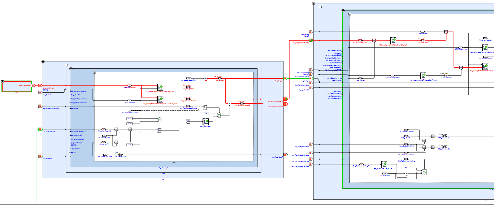
The Dependency Analysis Service provides improved readability and assists you in obtaining a better understanding of dependencies in function models. Using this feature, it is possible to find
-
Measurement variables that are influenced by certain calibration parameters, constants or system constants.
-
Calibration parameters, constants or system constants that influence a certain measurement variable.
Either an input or an output of a block can be highlighted or hidden in a single instance. Selection of multiple blocks or multiple inputs/outputs in a single instance is not possible. Multiple instances of highlighting and hiding on the same block are permitted.
|
Dependency Analysis Service is a visual aid. It does not influence the functioning of the model. |
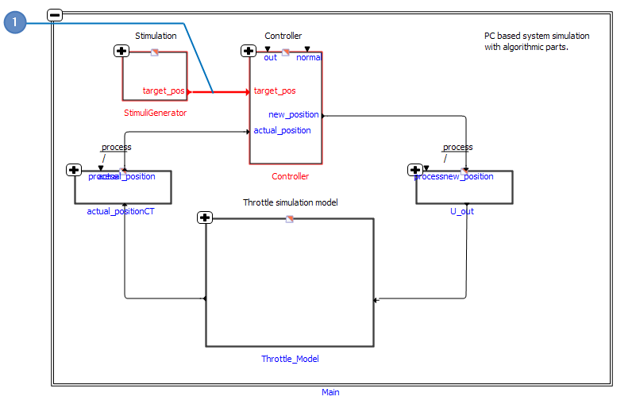
-
Highlighted elements
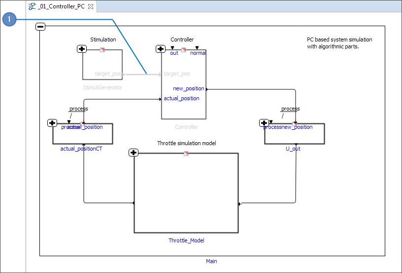
-
Hidden elements
|
If you are using EHANDBOOK-NAVIGATOR in Basic Mode, only a dummy interactive model is available for performing dependency analysis. |
There are four tasks that enable you to analyze the dependencies. They are:
-
Highlighting/hiding elements connected to the inputs of a block.
-
Highlighting/hiding elements connected to the outputs of a block.
-
Highlighting/hiding elements connected to the port labels.
-
Remove highlighting/hiding of blocks/labels.
Highlighting/Hiding Inputs of a Block
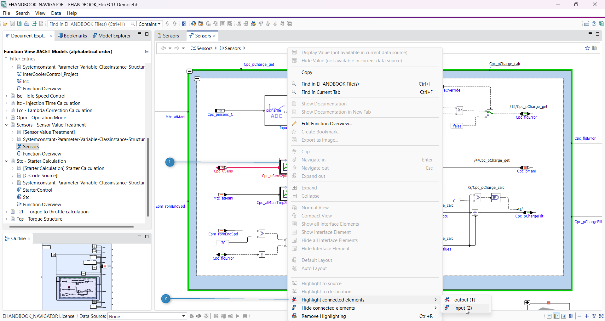
-
Input port selected
-
Context menu
Highlighting or hiding the inputs of a block allows you to understand which other blocks, such as calibration parameters, constants and system constants, influence that block. The interactive model must be open in the Model Viewer to highlight/ hide elements connected to the inputs of a block.
To highlight/hide elements connected to an input:
-
Right-click the block that contains the required input port.
A context menu (2) displays the Highlight/Hide connected elements option for the block. -
Select
Highlight connected elementsto highlight the elements connected to the input port. -
Select the required input port in the sub-menu. The selected port is emphasized in red (1).
-
Or select
Hide connected elementsto hide the elements connected to the input port.
Highlighting/Hiding Outputs of a Block
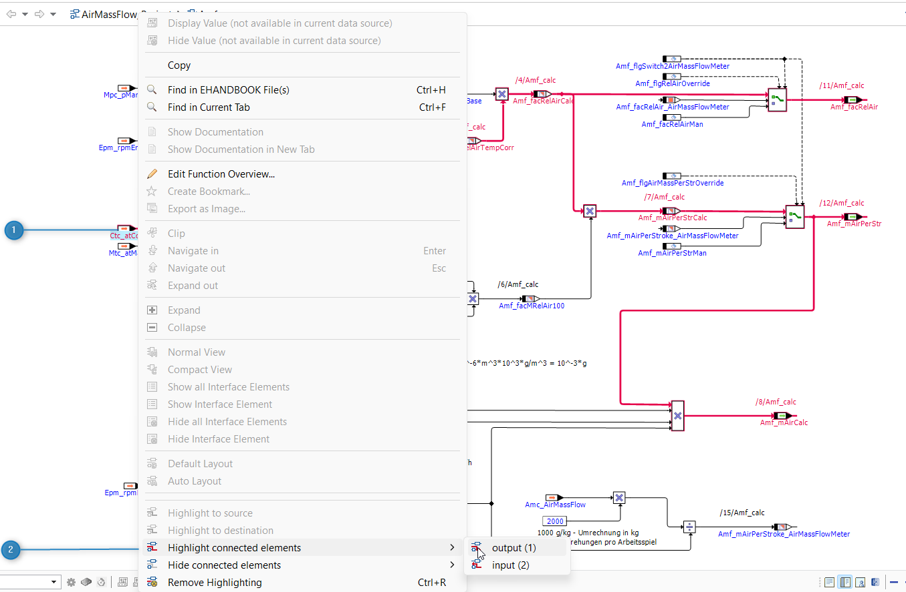
-
Output port selected
-
Context menu
Highlighting or hiding the outputs of a block allows you to understand which
other blocks, e.g. measurement variables, are influenced by that block. The interactive
model must be open in the Model Viewer to highlight/hide elements connected
to the inputs of a block.
To highlight/hide elements connected to an output:
-
Right-click the block that contains the required output port.
A context menu (2) displays the Highlight/Hide connected elements option for the block. -
Select
Highlight connected elementsto highlight the elements connected to the output port. -
Select the required output port in the sub-menu. The selected port is emphasized in red (1).
-
Or select
Hide connected elementsto hide the elements connected to the output port.
Highlighting or Hiding Elements Connected to the Port Labels
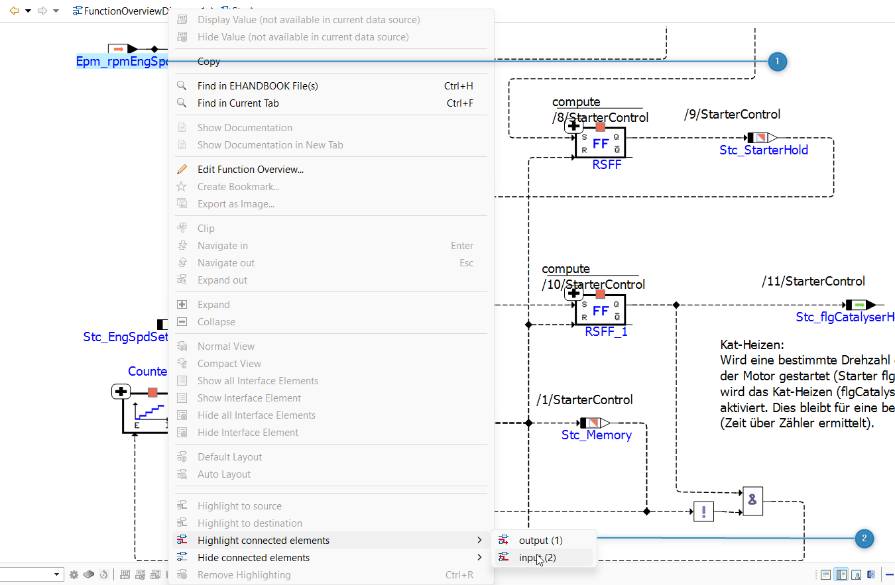
-
Port label selected
-
Context menu
Highlighting or hiding the elements connected to the port allows you to understand
which other blocks or elements, such as calibration parameters, constants
and system constants, influence that port. The interactive model must be
opened in the Model Viewer to highlight/hide elements connected to the port.
To highlight/hide elements connected to the port labels:
-
Right-click on the input or output port label.
A context menu (2) displays the Highlight/Hide connected elements option for the block. -
Select
Highlight connected elementsto highlight the elements connected to the input or output port label. -
Select the required input port in the sub-menu. The selected port is emphasized in red (1).
-
Or select
Hide connected elementsto hide the elements connected to the input or output port label.
|
Sub-menu for Highlight connected elements will only appear when there are more than one input/output ports associated with it. Otherwise you can simply select the option to highlight connected elements for single input/output port. |
Remove Highlighting or Hiding of Elements
-
Remove highlighting
This operation clears the highlighting or hiding information completely from the
entire model and restores the model to its initial state. You can initiate the operation
from the toolbar or from the Model Viewer menu or from the context menu
displayed when you right-click in the Model Viewer.
To clear highlighting/hiding of elements:
-
Click
Remove Highlighting(1) from the toolbar.
<Or> -
On the
Model Viewermenu, selectRemove Highlighting.
<Or> -
Right-click in the
Model Viewerand selectRemove Highlightingin the context menu.
<Or> -
Press <Ctrl+R>.
The highlighting/hiding of the elements is cleared from the model.
|
The icon in the toolbar, the |
Cease of Signal Flow Highlighting or Hiding
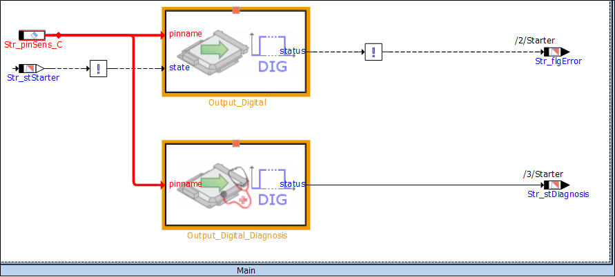
-
Unknown block highlighted in Orange
When highlighting/hiding the connected elements, the signal flow highlighting
stops at complex blocks where the internals are unknown (C-Code scripts, ESDL)
or hidden hierarchy. This helps you to better understanding of the interactive
model. If necessary, you can continue the signal flow highlighting manually from
these blocks.
These blocks where the signal flow highlighting/hiding stops is highlighted in
Orange by EHANDBOOK-NAVIGATOR.
Changing the Color of Signal Flow Highlighting or Hiding
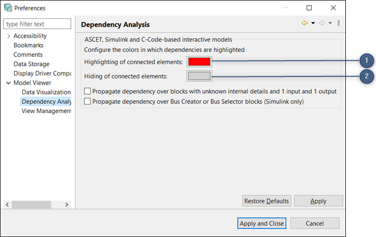
-
Color to highlight the connected elements
-
Color to hide the connected elements
EHANDBOOK-NAVIGATOR allows you to change the default color of the signal flow highlighting/hiding. The default colors are red for highlighting and grey for hiding.
To change the color of signal flow highlighting/hiding:
-
Go to the menu,
Fileand clickPreferences.
Preferencesdialog box is displayed. -
Click on the color of
Highlighting of connected elementsin theModel Viewer → Dependency Analysisto change the highlight color and click on the color ofHiding of connected elementsin theModel Viewer → Dependency Analysisto change the hide color.
A color pattern is opened. -
Select or define the color and click
OK. -
Click
Applyto apply the selected color. -
Click
Apply and Close. The selected color is applied.
Propagation of the Signal Flow Highlighting or Hiding for Unknown Blocks
While highlighting or hiding dependencies in interactive models, signal flow information is ceased due to unknown blocks like C-Code, ESDL, hidden (hierarchy) or solvers as shown in the image below.
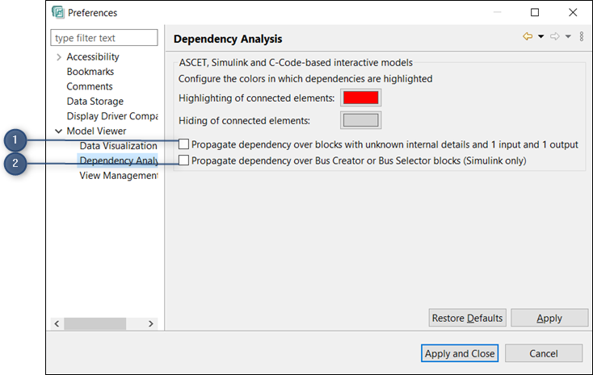
-
Unknown blocks which are ceased by signal flow
-
Bus Creator or Bus Selector blocks
In such cases, you can propagate the signal flow highlighting in forward and backward
direction over unknown blocks which have 1 input and 1 output. This is possible
by enabling the option in the Preferences window. You can propagate the
signal flow over the Bus Creator or Bus Selector Blocks by selecting the check
box Propagate dependency over Bus Creator or Bus Selector Blocks (Simulink
only).
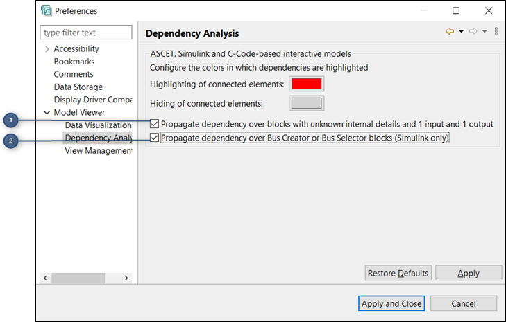
-
Checkbox to enable for the propagation of the signal flow highlighting/ hiding for unknown blocks
-
Checkbox to enable for the propagation of the signal flow highlighting/ hiding for Bus Creator or Selector Blocks.
When you enable the option(1), then the signal flow for unknown blocks will be highlighted or hidden.When you enable the option(2), then the signal flow for Bus Creator or Bus Selector Blocks will be highlighted or hidden.
To enable the checkbox for the propagation of the signal flow highlighting/hiding for unknown blocks and Bus Creator or Bus Selector Blocks:
-
Go to the
Windowmenu, clickPreferences.
Preferencesdialog box is displayed. -
Select the checkbox,
Propagate dependency over blocks with unknown internal details and 1 input and 1 output and Propagate dependency over Bus Creator or Bus Selector blocks (Simulink only) in the Model Viewer → Dependency Analysisto enable the option. By default, this option is disabled. -
Click
Apply. -
Click
Apply and Close.
The propagation of the signal flow highlighting/hiding for unknown blocks is enabled and the propagation of the signal flow highlighting/hiding for Bus Creator or Bus Selector Blocks is enabled.
Now, when you click on Highlight connected elements or Hide connected elements, the propagation of the signal flow over unknown blocks and Bus Creator/ Selector Blocks are continued.
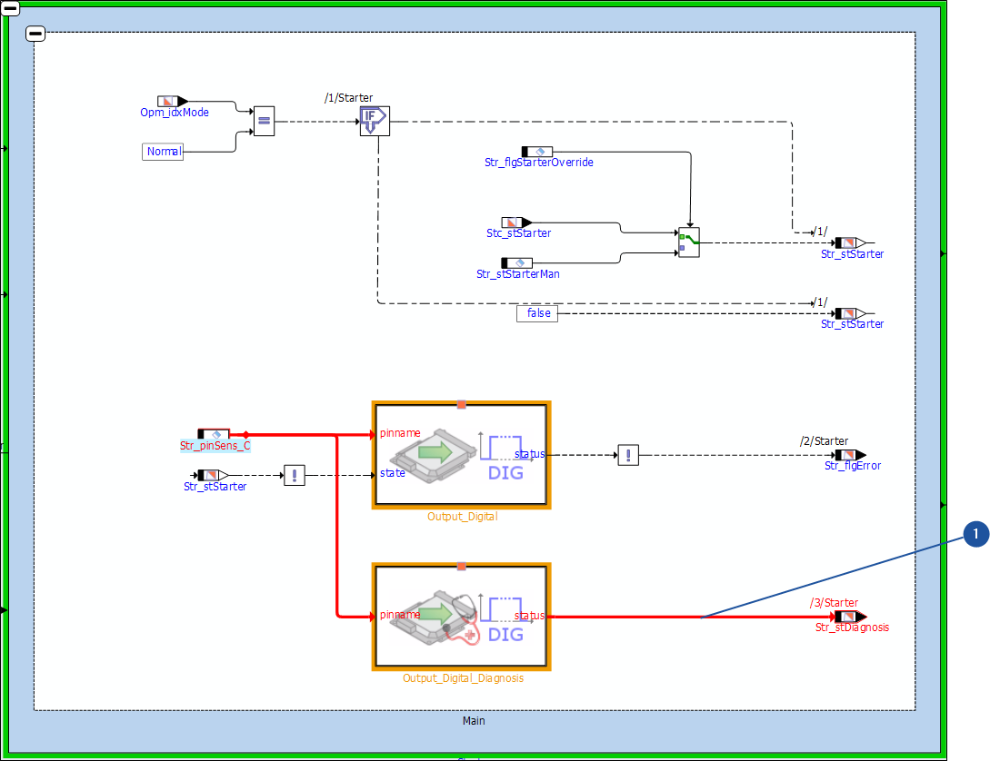
Signal Flow Highlighting for C-code Based Interactive Models
In C-code based interactive models, signal and control flow highlighting can be performed in forward and backward directions.
To highlight the signal flow for inputs in c-code based interactive models, rightclick
on the required entity and then select Highlight inputs and click Signal flow
based on your requirement. The highlighting of signals is color coded. The
entities/ports/connections which are impacting are highlighted in red, by default.
Similarly, to highlight the signal flow for outputs, right-click on the required entity
and then select Highlight outputs and click Signal flow. The entities/
ports/connections which are impacted are highlighted.
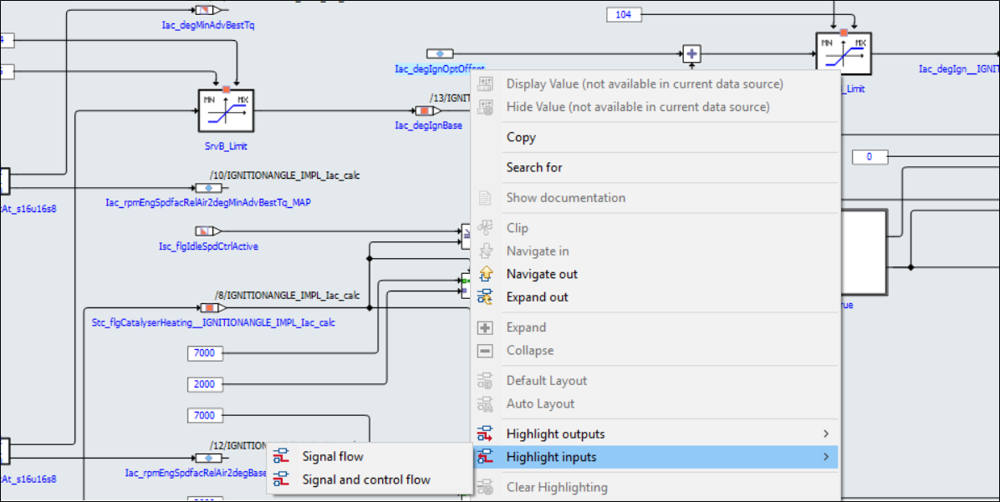
The image below displays the entities/ports/connections which are impacting the selected entity are highlighted.
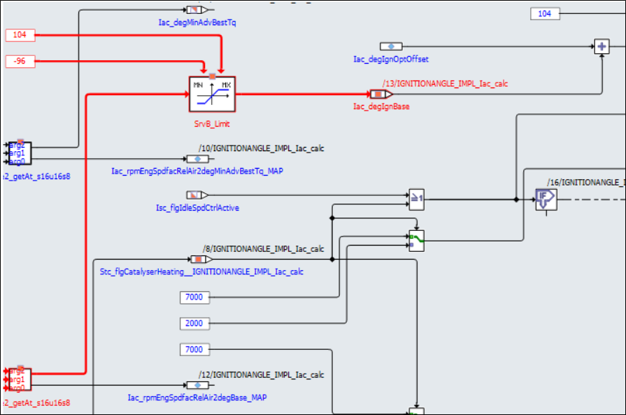
The same can be performed for highlighting the Signal flow and control flow
where it highlights for both the signal flow and the control flow path which are
impacting or impacted by the entity, based on the inputs/outputs selected.
|
Signal and control flow highlighting cannot be triggered for hierarchy connectors. |
|
Signal Flow Highlighting for C-code based interactive models is not supported in Basic Mode of EHANDBOOK-NAVIGATOR. |
Highlighting of Connections in Interactive Models and Function Overview Diagrams
This feature highlights the lines, connected edges in Red color based on the selection in the interactive models (ASCET, Simulink, and C-code models) and Function Overview diagrams. This feature helps you to know the end to end connections for the selected line/edge. When a user clicks on a line/edge, the clicked line is highlighted in Red color. If the user clicks on a junction point, all the connected edges and lines are highlighted. When the user clicks on another line/edge/junction point, the previously highlighted line/edge/junction point is deselected. This feature works even for Virtual connections and all edges/lines highlighting.
Navigation and Exploration of ASCET Based Interactive Models with Module Methods
Navigation and exploration of ASCET based interactive models with module methods supports all operations with respect to expandable entities such as Navigate- in, Navigate-out, Model Exploration and so on. Module methods are also known as self classes in ASCET based interactive models.
On expanding a self class, it generates imported, arguments, exported and return connections.
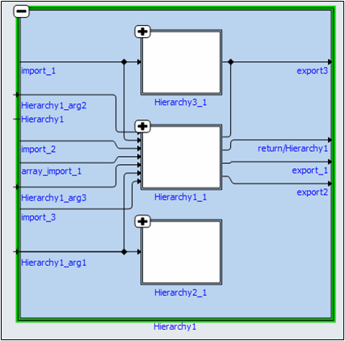
|
If you are using EHANDBOOK-NAVIGATOR in Basic Mode, then a dummy model is
displayed in |